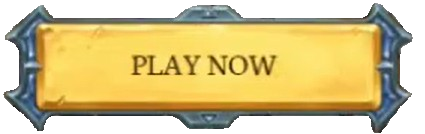

SERVER IP >>
mc.hypixel.net
Home
Store
Play
To join Hypixel you need to do this.
In Minecraft: Java Edition, go to
Multiplayer
, then
Add server
Enter
mc.hypixel.net
into server address box and click
Done